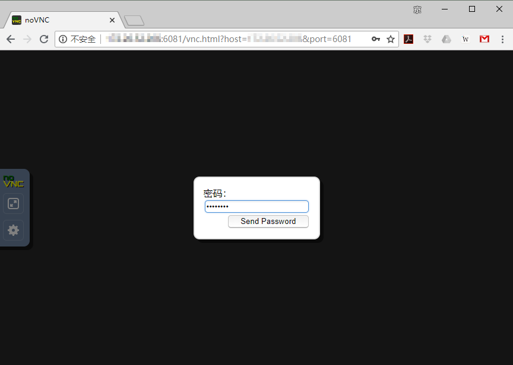

Advanced Linux Skills for Using NVIDIA Docker II: with VNC
| Date: | Jun 14, 2018 |
|---|---|
| Last Updated: | Jun 15, 2018 |
| Categories: | |
| Tags: |

Contents
Instruction
Before reading this article, please make sure that you have understood how to use docker (or read the prior article). Here is the prior instruction that gives you a whole imagination about docker. Some techniques (like how to save/read images or how to log in NVIDIA cloud) would not be introduced here particularly. We strongly recommend you to read this article after understanding the prior one.
In this article we would make you know how to get access to the prepared remote desktop on that DGX server. I have prepared the basic image that contains the desktop with some applications. But if you want to build your own one, you could check the last section, which would gives you an example of building the basic image with a Xfce4 desktop. The basic image include these software:
- gcc-6.3.0 (preferred), gcc-7.4.0 and gcc-5.5.0
- ffmpeg, opencv-2.4 and some other libs
- Matlab-R2018a with MatCaffe
- Python-2.7.0 with PyCaffe
- Visual Studio Code and Codeblocks
- Firefox and Chromium
- GVim, GEdit and Notepadqq
- GIMP-2.10.2
- Chinese (Simplified and Traditional) input methods
Note that this instruction is for those who use Windows and putty as the client. However, the client application is not a key point. If you know your workspace, you could understand how to perform the same operations with your machine easily. You need to prepare such applications before we begin our tutorial:
- A terminal that could use SSH with multiple sessions (like putty);
- A web browser.
To be specific, here you do not need to make preparations for GUI services, like using X11 client. Because we would not run applications via the remote terminal.
Get started
We would like to divide the operations into several parts: (1) Initialization from the terminal (2) Working with web services (3) Logout and saving the image securely.
Part 1: initialization
As shown in the following screenshots, first, open the SSH terminal and log in successfully (Step 1). Then, duplicate the session (this is why we need a client that support multiple sessions) (Step 2). Now we would have two sessions in the meantime. In the following part, we would call them Session 1 and Session 2.
| 1. Open session | 2. Duplicate session |
|---|---|
 |
Then you could use the following command to find what images could be used and run your image (Step 3).
$ nvidia-docker images
$ nvidia-docker run -it --rm -v ~:/homelocal xubuntu:1.5
You have to remember that what do these commands mean. Check here for a reference. To be specific, now we run a image with a name of “xubuntu” and a tag of “1.5”. This image is a prepared desktop that enables us to use web services to get access to it. If you succeed, you will see you username has been changed to “root” and the device name has been changed to the container ID, like this screenshot.
| 3. Session 1: Get into the container |
|---|
In fact, you could see some simple instructions that I have written when you get into the image. But you may prefer to follow this tutorial in the following steps.
You need to pay attention to the host IP as long as the used port returned on the screen. The port number is followed by the container ID. In this example, it is “1”. Note that once you open the container, the VNC service has been launched, the service would be mapped out from the assigned port.
Now we use
$ vncpasswd
to change the password for web service (Step 4). This password is different from what you use to log in the machine. And it is only a simple one. When you change the password, you are not required to enter the predefined one, and you should not enter a too long password (otherwise it would be cropped). We recommend you to use a 8-length password here.
| 4. Session 1: Change the password |
|---|
Now we turn to the other session. You need to use a command noVNC outside the container so that we could launch the web service which is different from VNC service. It accepts the service mapped out from the VNC port and provide the web interactions by an output port. So the command should be like this:
$ noVNC IP=172.17.0.3:5901 PORT=6080
The IP option is an IP address followed by a port number, which is required in general cases. The IP address is that of the container, i.e. the host IP we have remembered before. The following port number 5901 is defined by the VNC server. It would take the 590X ports to provide VNC services. In this example, because the used port is “:1” inside the container, here we use 5901.
The PORT option means the output port number. It is different from the port used by VNC server. If we view the 5901 port as an input, this one should be an output. noVNC is a program that provide the web service of VNC. It takes the 608X ports. The default port number is 6080 if we do not assgin the PORT option. And now we could have a try by entering this command (Step 5)
| 5. Session 2: Fail to open noVNC | 6. Session 2: Success to open noVNC |
|---|---|
Oooops! We get a failure message. Because the output port 6080 has been taken by another user now. In this case, we could try to use another port number, like 6081. Then we would find that in step 6 the service has been opened successfully (Step 6).
Note that the noVNC command is a script which is written by me. This customized script may simplify the usage of the original noVNC. But you need to pay attention that if succeed, we could see two URLs. The first one is provided by me, and the second one is provided by the original program. The original program prefer to use the machine name to replace the IP address, which is not preferable for us because we have no records of the remote machine name in our host files. So we need to use the first URL which use the plain IP address in the following parts.
Now we could confirm that both the VNC (run in the container) and noVNC (run outside the container) have been running. We should not shut down either one of the two sessions when we use the services, otherwise our works would be interrupted.
Part 2: Get the online service
Now we open a web browser and use the URL returned from noVNC. In this example we use chrome and such an URL:
http://xxx.xxx.xxx.xxx:6081/vnc.html?host=xxx.xxx.xxx.xxx&port=6081
And we could see the noVNC web client after connecting successfully (Step 7).
| 7. Open the web client | 8. Input the password |
|---|---|
|  |
Clicking the “connect” button, and we would be required to enter the password that we set before (Step 8). If you could get to step 7 but could not get to step 8, you may make mistakes before. For example, you may use a wrong container IP address or VNC port number.
After entering the right password, you could see a terminal has been shown on the screen. You could verify that it is running inside the container by checking the username. We could use xrandr to see and change the resolution according to our client screen. Then we use
$ starxfce4 &
to launch the desktop (Step 9).
| 9. Lauch the desktop | 10. Open the full screen mode |
|---|---|
You would be able to interact with the remote desktop now. You may prefer to enter the full screen mode of the browser by clicking the button on the slide bar (Step 10). VNC service is powerful, if two different user get access to the same output port of noVNC, they would disturb each other. But you could run multiple VNC server sessions in the same docker to avoid this problem. Here we would not discuss about this trick.
Now we could begin our works. Before that, I need to emphasize that we should not shut down the first terminal where we type starxfce4 during our works, because the desktop process is running on it. To avoid the mistaking operations, I recommend you to move it (and the VNC configuration window) to Workspace 4 (Step 11). In the following screenshot, you could see 4 workspaces, you could view each of them as a desktop. This feature is provided by Xfce4 desktop software that we use.
| 11. Move main terminal to the Workspace 4 |
|---|
We could open a software, like chromium to test the interaction. You would find that you could use the desktop just like using your own computer easily. But I have to warn that you are running the desktop in root mode (because the default mode inside the container is root). In root mode, some software refuse to provide services and some software need specific options to run. Like chromium-browser need such an option to launch:
$ chromium-browser --no-sandbox
You could launch it by clicking the icon at the bottom of the screen, because I have added the option to the launch option of that icon. If you find some software could not be run, you may need to check it in the terminal and find whether it needs some options to run in root mode.
Part 3: Log out and save securely
Assuming that we have finished our works, we may want to save the container so that we could save our changes to the desktop (for example, we may change the desktop icons or add some software). To be specific, if we just use the data outside the container, we may not need to save the session. In this case you could exit as you wish and do not need to follow the following steps.
First, you need to log out from the desktop. Just click the button on the northeast corner of the screen, and choose the log out item (Step 12). Then you need to check the “save session” option. After that, you could click “Log out” button (Step 13). Note that although you have logged out, the first terminal is still running. But it does not matter. We could shut down the browser directly.
| 12. Log out from the desktop | 13. Log out options |
|---|---|
Let us get back to session 2. The following steps are required if you want to log out securely. First, use Ctrl+C to terminate noVNC service in session 2 (Step 14).
Then, we switch to session 1. use such command to terminate VNC server (Step 15)
$ vnc4server -kill :1
:1 means we kill the server which uses the port 1. This option depends on the used port that is shown when we enter the container. If we run multiple VNC sessions, we may need to kill for more than once so that we could maintain that all VNC servers are killed.
| 14. Session 2: Kill noVNC | 15. Session 1: Kill VNC server |
|---|---|
Do not exit any session now! We need to keep the session 1 running and switch to session 2. And we use
$ nvidia-docker ps -a
to see the containers that are running and their IDs (Step 16). Find our own one and use
$ nvidia-docker commit container_ID image_name:tag
to save the current container as a new image (Step 17). This part could be referred here.
| 16. Session 2: Check containers | 17. Session 2: Save the image |
|---|---|
The last step is, exit from the container. After this step, congratulations! You have make all works done. You could use nvidia-docker images again to check whether your saving takes effect. After that, you could shut down all sessions.
| 18. Session 1: Exit from the container |
|---|
Build your own desktop image
In this part, we will discuss about how to build your own docker images. This technique is based on dockerfile which is arranged by plain linux commands wrapped by docker instructions.
Write the dockerfile
We have the docker instructions documents in both English and Chinese. You could check here for a reference.
Although the documents have a detail introduction to each instruction, we would like to introduce them simply here:
| Instruction | Description |
|---|---|
ADD |
Copy new files, directories or remote file URLs and adds them to the filesystem of the image at the path. |
COPY |
Copy the files stored in local disk and adds them to the filesystem of the image at the path. |
ENV |
Set the environmental variables. |
EXPOSE |
Set the output port number of the docker for some services. |
FROM |
Only could be used for once. Set the baseline docker image. |
LABEL |
Set metadata of the built image. |
STOPSIGNAL |
Set the system call signal that will be sent to the container to exit. |
USER |
Set the current user. If not set, it would be root. |
VOLUME |
Set an external mount directory. |
WORKDIR |
Set the current dir when entering the container. |
ARG |
Set the environmental variables that would be only used during building the image. |
ENTRYPOINT |
Set a script that would be executed when entering the container. |
CMD |
Set the arguments of the entrypoint script. |
After that, you could download this example with which we build the basic image xubuntu:1.0.
This example composes of 3 files
xubuntu
|---Dockerfile
|---docker-entrypoint
`---locale.gen
The first one is the docker file, it pulls the NVIDIA image cuda:9.0-cudnn7-devel-ubuntu16.04 and add a series of libraries and applications. The second file is the entrypoint script. And the last one is the file for localization. When building the image, the second and the third file would be copied in the destination folder of the container so that they would play their roles.
After downloading this branch, assuming that the folder path of the branch is ./xubuntu, then you need to use this command in your . folder to build the image.
$ nvidia-docker build -t xubuntu:1.0 xubuntu
It may take a while until the building process finishes.
How about a different desktop
In the example we use the Xfce4 as our desktop. Maybe you would like to use another one. Here we could gives you some choices:
| Desktop | Description |
|---|---|
| KDE |  |
| MATE |  |
| GNOME |  |
| Cinnamon |  |
| Budgie |  |
| LXDE |  |
| XFCE |  |
You could read this article to get more details. After that, you could use your preferred desktop instead of Xfce4.
Set the noVNC program
After building the image successfully, you need to install the noVNC service on your device. Check here for the noVNC wrapped by a simple script.
Note that the script noVNC is designed for our DGX machine. You need to change some instruction texts in this file so that it could show your machine IP and name correctly.
To make use of this service, just copy this branch to your /usr/local/bin/ like
/usr/local/bin/
|---noVNC
`---noVNCbin
|---utils
| |---launch.sh
| `---...
`---...
And you could use such simple command on your Bash:
$ noVNC IP=172.17.0.2:5901 PORT=6080
where 5901 is the entry (input) port and 6080 is the service (output) port.